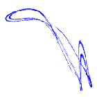

TISEAN 2.1
TISEAN home
Copyright ©
New!
Tutorial
General Manual
Surrogates Manual
Table of Contents
Usage Notes
Installation
Problems
Changes
Mailing list
Download
Download page
Updates
Sections
Make time series
Linear tools
Utilities
Stationarity
Embedding
Prediction
Noise reduction
Dimensions
Lyapunovs
Surrogate data
Spike trains
Multivariate
Programs
addnoise
ar-model
ar-run
autocor
av-d2
boxcount
c1
c2d
c2g
c2naive
c2t
choose
cluster
compare
corr
d2
delay
endtoend
events
extrema
false_nearest
fsle
ghkss
henon
histogram
intervals
ikeda
lazy
ll-ar
low121
lyap_k
lyap_r
lyap_spec
makenoise
mem_spec
mutual
notch
nrlazy
nstat_z
nstep
onestep
pc
poincare
polyback
polypar
polynom
polynomp
predict
project
randomize
randomize_auto
randomize_autop
randomize_spikeauto
randomize_spikespec
randomize_uneven
rbf
recurr
resample
rescale
rms
sav_gol
spectrum
spikeauto
spikespec
stp
surrogates
svd
timerev
upo
upoembed
wiener
xc2
xcor
xzero
zeroth